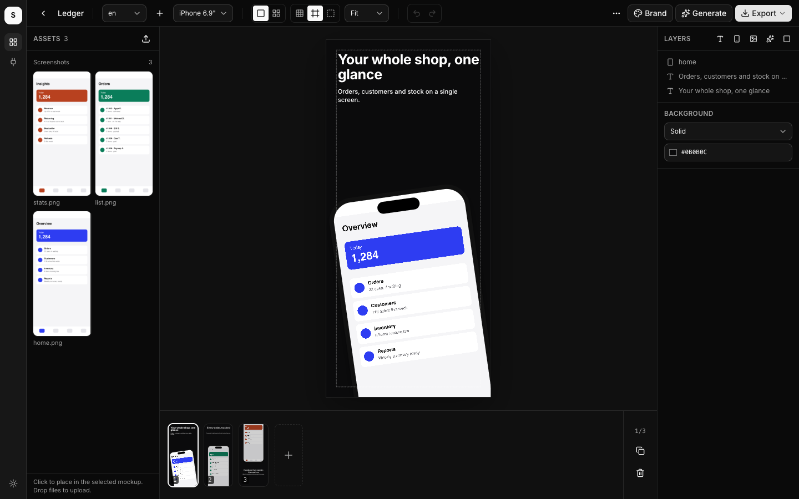
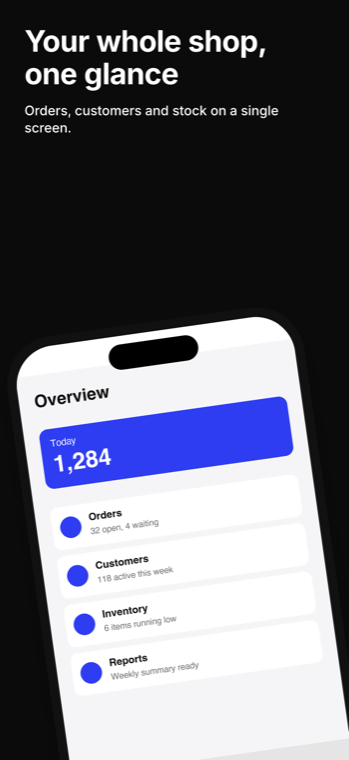
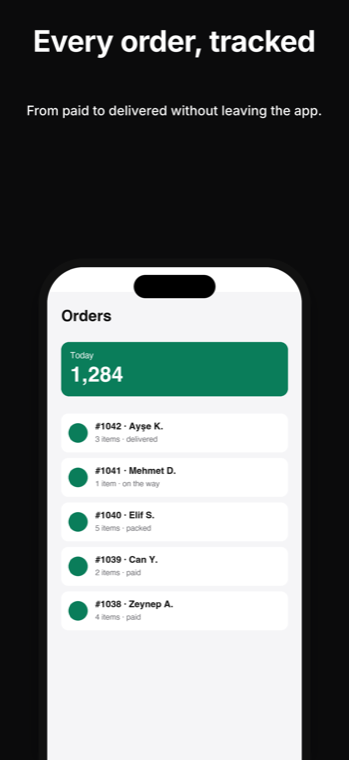
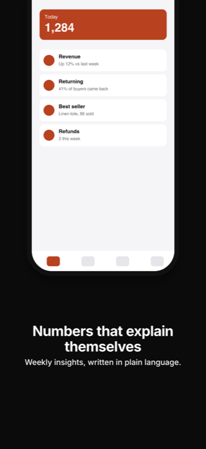

Open source · MIT · runs on your machine
Store screenshots, generated.
Upload your in-app screenshots and a logo. Get App Store and Google Play images for every
locale and device, from templates you can still drag around. No account, no upload to anyone's
cloud: a local Next.js app with SQLite under ./data.
git clone https://github.com/tolgazorlu/storescreens && cd storescreens && pnpm i && pnpm dev




Three templates from the same three uploads. 1320 × 2868, store-ready, exported as a ZIP per locale.
1. Upload
Drop in-app screenshots (one per feature) and the app icon. Names are kept, so a script can refer to home.png later.
2. Generate
Pick a locale, a device and a template per screen; titles in the target language. One call makes the whole set, and derive rebuilds it for iPad and foldables.
3. Export
Store-size PNGs per locale and device, flattened for App Store Connect, plus the iOS 27 creative assets (header, search, universal) when you need them.
What's inside
- Devices iPhone 6.9″ and 6.5″, iPad 13″, iPhone Duo outer and inner, Android phone, App Store creative canvases.
- Templates hero, title-top, caption-bottom, split, feature-list, two-phones, duo, pair, creative, plain, text-only.
- Editor snap guides, safe-area overlay, grid, undo/redo, align buttons, per-layer inspector. What you see is what satori renders.
- Locales one set per language; Arabic and Hebrew ship with the right fonts and bidi handling.
- Themes dozens of colour and background presets (light, dark, vibrant, pastel, retro, mono, mesh), overridable per call.
- Official bezels Apple's product bezels for iPad and Duo, fetched from Apple's own CDN by a script.
Built for agents too
Every editor action exists as a REST route and as an MCP tool. Point Claude Code or any MCP client at the running app and ask for "store screenshots for my app in Turkish and English".
claude mcp add --transport http storescreens http://localhost:4110/api/mcpThe server binds 127.0.0.1 and refuses requests whose Host is not loopback or whose Origin is another site. There is no auth because nothing leaves your machine.